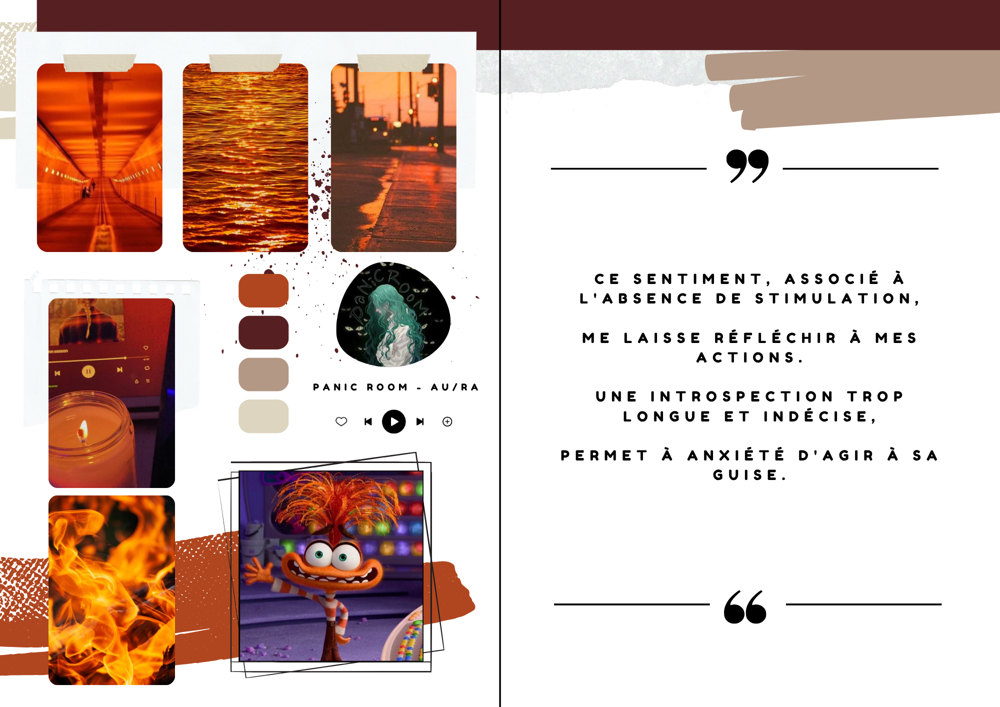
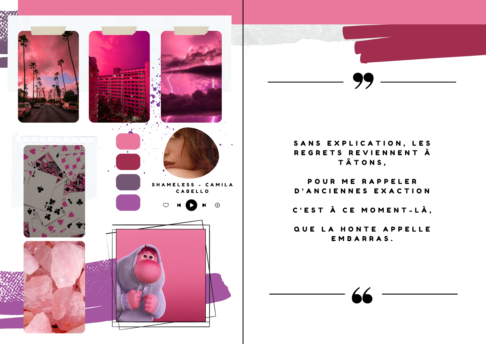
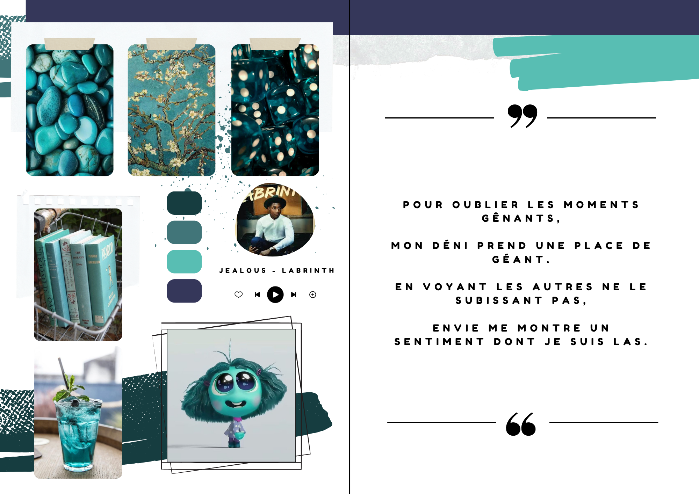
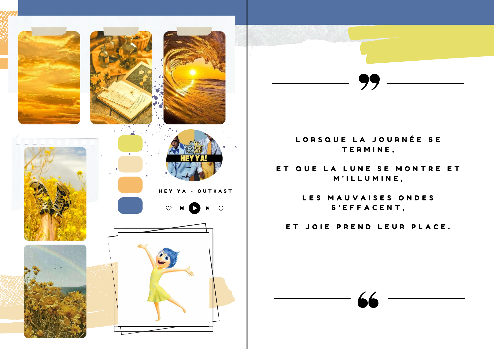
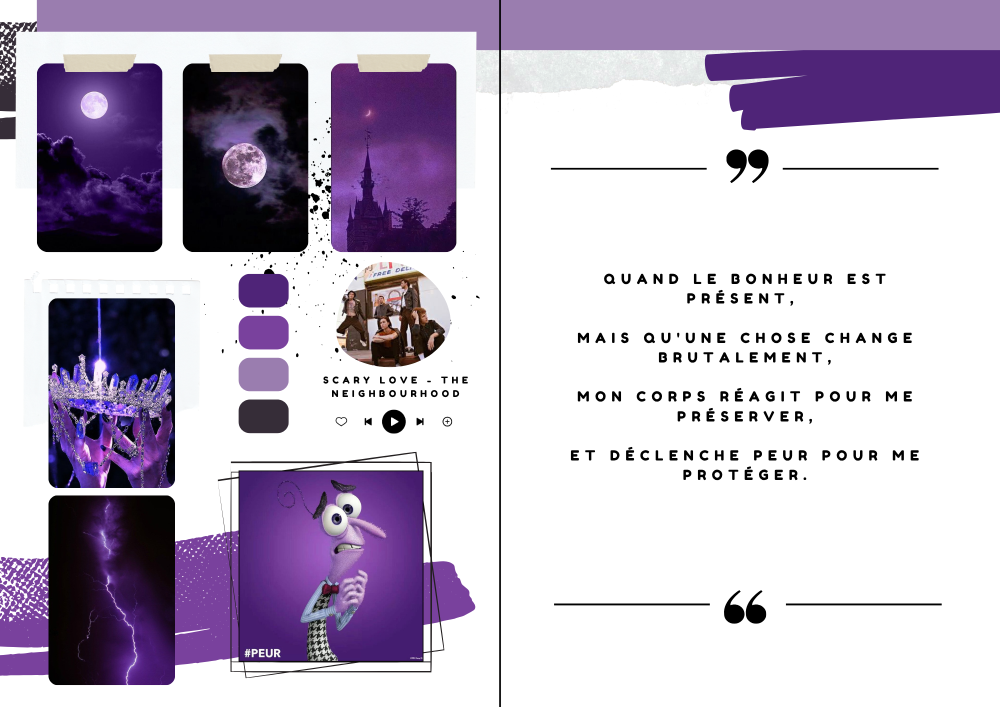
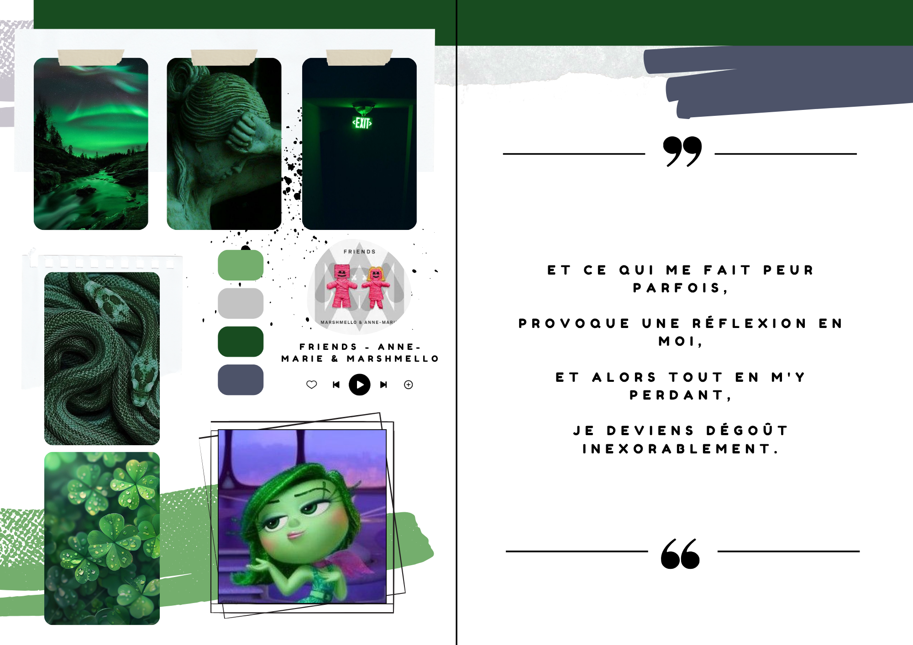
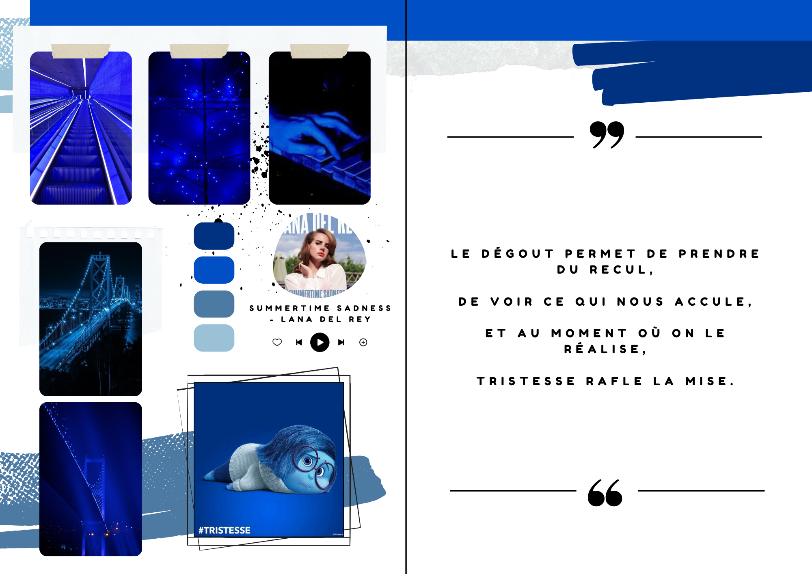
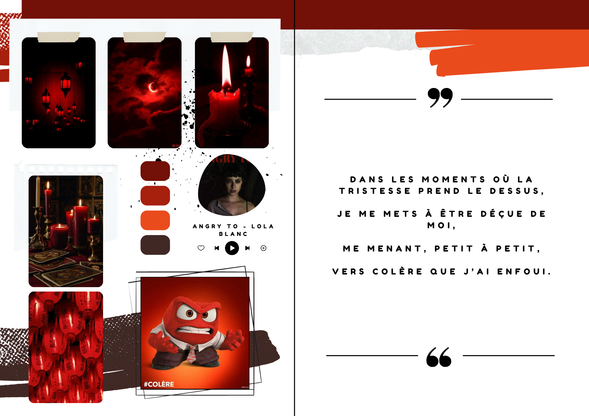

PROJET 2 : Auto-Portrait
Description :
Pour le cours de Projet Personnel et Professionnel, nous avons du produire un auto- portrait. Nous n’avions pas de thème précis à suivre, nous devions simplement faire en sorte que notre production nous ressemble. J’ai décider de travailler avec les émotions de Vice-Versa 2. Sur la droite vous retrouverez un poème qui peux se lire seul ou tous mis bout à bout. Sur la gauche j’ai mis des éléments d’esthétique correspondant à la couleur des personnages, une petite palette de couleur, la photo du personnage et enfin une chanson qui, selon moi, me rappel l’émotion.








